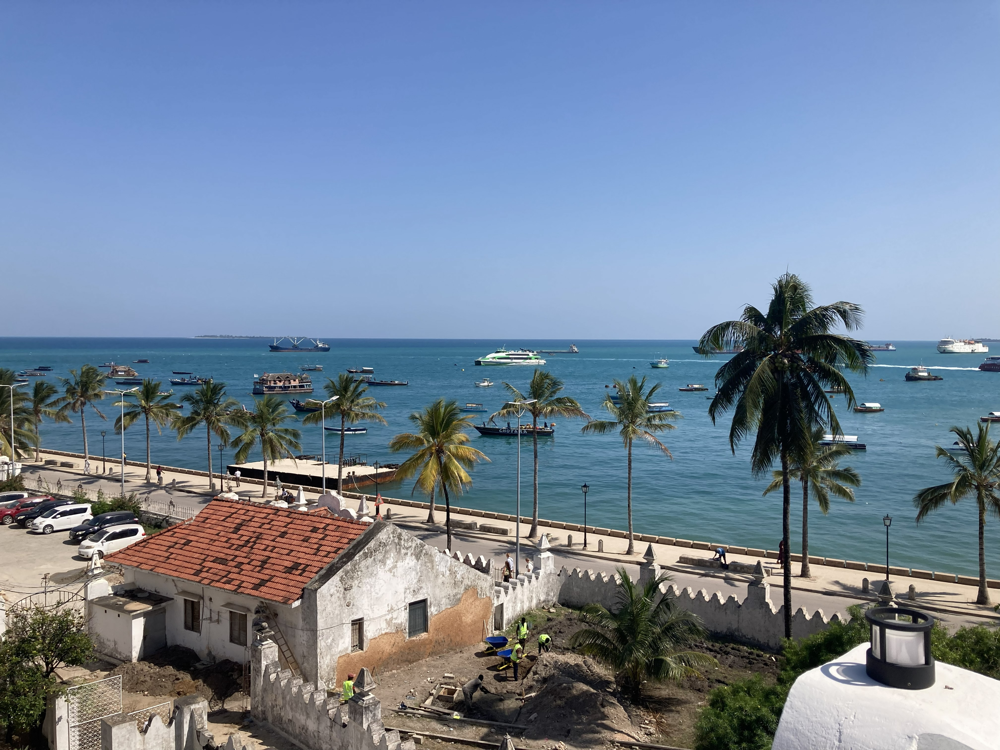
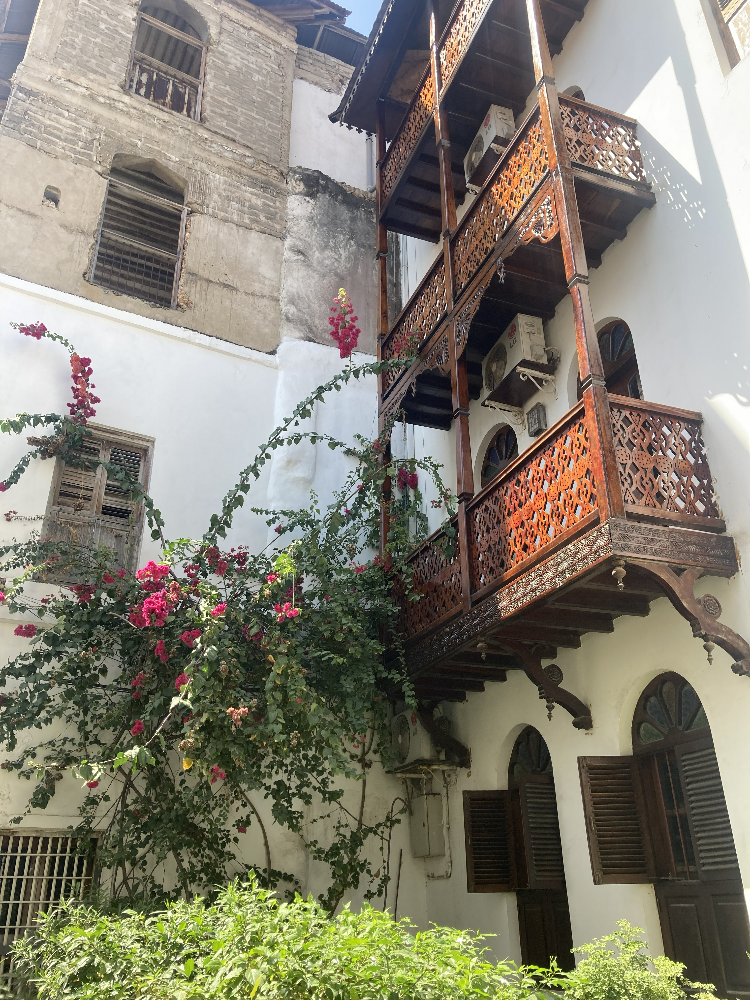
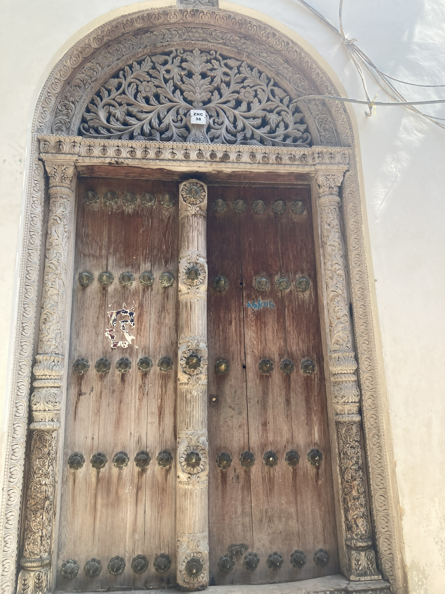
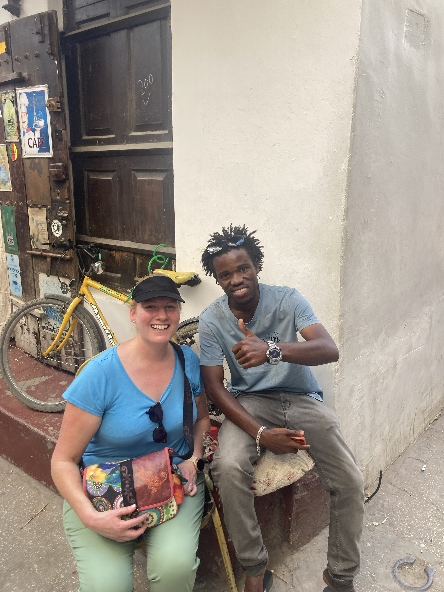
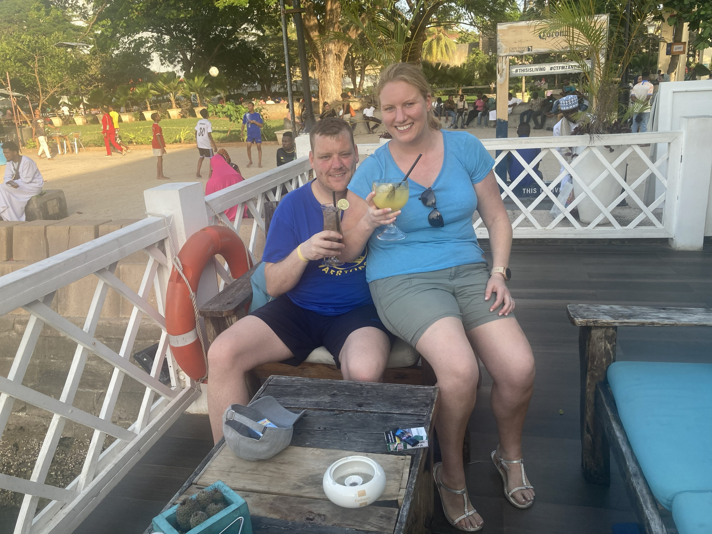
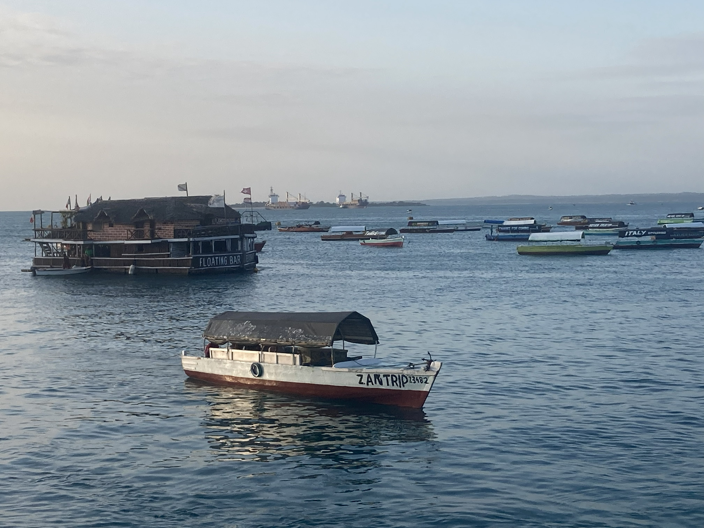

We began our honeymoon in 2023 on the extraordinary island of Zanzibar — and what a way to start. Four nights based in the atmospheric Stone Town, a full island tour that took us to a magical cave swim, a day trip out to Prison Island with its giant tortoises, and a wonderfully meandering local-guided wander through the labyrinthine streets of the old city. Zanzibar is diverse, fascinating, warm-hearted and utterly unlike anywhere else on earth. Bring cash. Mind the potholes. Love every minute.
What this island gave us:
The honeymoon story
We chose Zanzibar as the first stop on our 2023 honeymoon — and it set the bar extraordinarily high. Based in Stone Town for four nights, we were immediately immersed in one of the most atmospheric and historically rich places we have ever stayed. The old city is a UNESCO World Heritage Site and every narrow lane tells a story — the Arabic architecture, the ornate carved wooden doors, the mosques and churches standing almost side by side, the scent of spices drifting through the air.
One of the things that struck us most was the remarkable harmony between Zanzibar's different religious communities. The island is predominantly Muslim, but Christianity is also very much present — and the two coexist with a warmth and mutual respect that is genuinely inspiring. It gave the whole place a feeling of peace and openness that we have rarely encountered.
The island tour was extraordinary — a full day taking in the diversity of Zanzibar's landscapes and communities, culminating in a swim in a cave that was one of those genuinely magical travel moments you never forget. Prison Island was a brilliant half day — the giant Aldabra tortoises alone are worth the boat trip — and having a local guide show us around Stone Town gave us a completely different perspective on the city.
A few practical notes for anyone planning a visit: bring plenty of cash — cards are not widely accepted and the markets and bazaars run entirely on haggling. And prepare yourself for the roads. The potholes in Zanzibar are legendary. Go with the flow, hold on tight and enjoy the ride.
A UNESCO World Heritage Site and one of the most atmospheric places we have ever stayed — narrow lanes, carved wooden doors, mosques, spice stalls and centuries of history at every turn.
One of the most magical moments of the entire trip — swimming in a natural cave on the island tour is an experience that stays with you long after you leave.
A brilliant half day trip — the giant Aldabra tortoises are extraordinary up close, the history of the island is fascinating and the boat ride over is lovely.
Having a local show us around Stone Town completely transformed our understanding of the city — the stories, the history and the hidden spots you simply would not find on your own.
The coexistence of different faiths and cultures on Zanzibar is one of the most striking things about the island — genuinely warm, open and inspiring in a way that is hard to put into words.
From the dhow boats on the harbour at sunset to the call to prayer echoing over the rooftops — Zanzibar has an atmosphere that is completely its own and utterly unforgettable.
From the iconic carved doors of Stone Town and the turquoise waters to the local musicians, the boats and the golden light of a Zanzibar evening.






Watch our short
Stone Town, the island's extraordinary diversity, the colours and the atmosphere — our Zanzibar honeymoon reel captures what makes this island so special.
Zanzibar — the Spice Island 🌴
Whether you are planning a honeymoon, a beach escape or an adventure — TourRadar has brilliant Zanzibar tours to suit every kind of trip.
Zanzibar can be enjoyed as a standalone island escape or combined with a Tanzania mainland safari for one of the most extraordinary travel experiences on earth — the Serengeti and Zanzibar together is a truly bucket-list combination. A guided tour takes all the logistics stress away so you can just enjoy every moment.
Disclosure: This is an affiliate link. If you book through it we may earn a small commission at no extra cost to you.
From Prison Island trips and spice tours to snorkelling, dhow cruises and Stone Town walking tours — browse Zanzibar activities here:
Disclosure: If you book through these links we may earn a small commission at no extra cost to you.
Common questions
What to pack for Zanzibar
Zanzibar is hot and humid year-round — temperatures typically sit around 28–32°C. Pack light and breathable clothes, bring strong sun protection and remember that Stone Town is a predominantly Muslim area so modest dress is respectful when exploring the old city. These are the things we would not leave home without.
The East African sun is intense — especially on boat trips, beach days and the Prison Island excursion. High SPF is absolutely essential and you will go through more than you expect.
View on Amazon →Mosquitoes are present in Zanzibar, particularly in the evenings. Strong insect repellent is essential — and check with your doctor about malaria prophylaxis before you travel.
View on Amazon →Stone Town is a Muslim-majority area and modest dress is respectful — lightweight linen trousers and tops that cover shoulders are ideal for exploring the old city comfortably.
View on Amazon →Staying hydrated is crucial in the heat — especially on the full day island tour. A reusable bottle keeps you going and saves money throughout the trip.
View on Amazon →Essential for boat trips, the cave swim and any beach time. A waterproof pouch protects your phone and lets you capture those magical water moments without worry.
View on Amazon →Full days out on tours and excursions will drain your battery fast. A power bank keeps you connected and means you never miss a photo opportunity.
View on Amazon →Handy for maps and staying connected — particularly useful when you are out on the island tour or exploring beyond Stone Town.
View on Amazon →Tanzania uses Type D and G plugs. Don't arrive after a long flight with nothing charged — an adaptor is essential.
View on Amazon →Perfect for day trips and excursions — light enough to carry everywhere, with room for water, sun cream, a layer and anything you pick up in the markets.
View on Amazon →Always worth having — particularly for a destination like Zanzibar where pharmacies can be hard to find outside the main areas.
View on Amazon →Disclosure: These are Amazon affiliate links. If you buy through them we may earn a small commission at no extra cost to you. These are all things we'd genuinely pack for a Zanzibar trip.
Zanzibar is one of the most extraordinary islands on earth — combine it with a Tanzania safari for the ultimate African adventure, or simply let the Spice Island work its magic on you. Bring cash, embrace the chaos and fall in love with it.
Affiliate disclosure: if you book through our links we may earn a small commission at no cost to you. We only recommend trips and experiences we'd be happy to stand over.